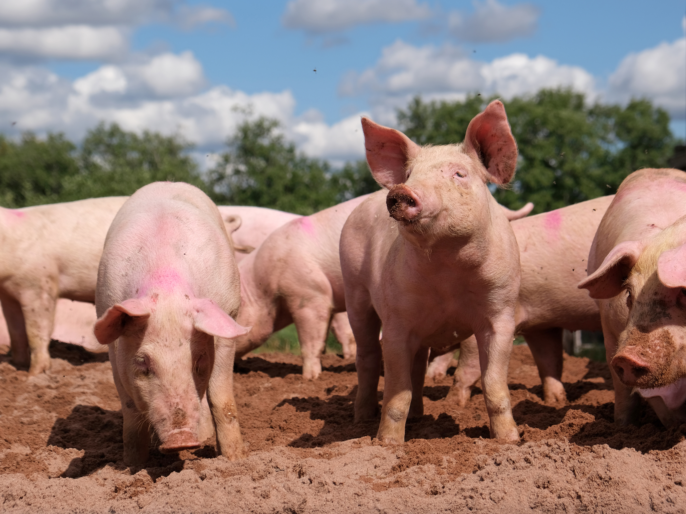
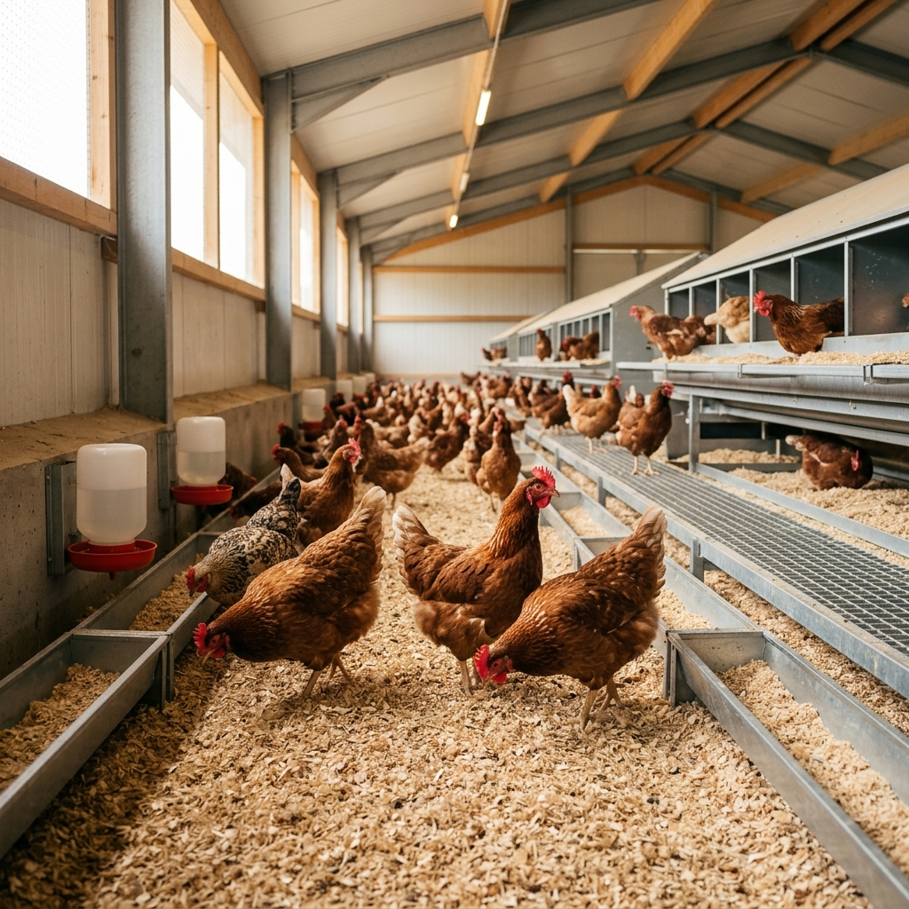

El bienestar comienza con el cuidado.
Monitoreo técnico de aves de postura y porcinos bajo el marco de la Resolución 136 de 2020 y la metodología EBA Porcinos 3.0. Evaluaciones rigurosas capturadas directamente en galpón y corral con sincronización continua.

Evaluación de Confort y Densidad · Lote P-04
Corral 3 · Granja Experimental UFPSO
Líneas Productivas en Monitoreo
Protocolos de bienestar adaptados a las condiciones agroclimáticas de Norte de Santander, auditados con rúbricas de campo validadas.

Línea Porcina
Inspección de comederos tipo tolva sin alimento fermentado, bebederos tipo chupón a 45° con caudal constante de 1.5 a 2.0 L/min, y evaluación de estrés térmico (jadeo) bajo la Resolución 136 de 2020.
Aves de Postura
Control de disponibilidad y confort en nidales (1 por cada 5 aves), líneas de niple con copa sin fugas, calidad de cama de viruta seca y evaluación de cobertura de plumaje sin canibalismo ni picaje severo.

Diario de Campo
Auditorías capturadas con tolerancia a desconexión mediante SQLite y sincronizadas a la nube.
Atención Prioritaria en Granja
Corral 5 · Lote Ceba Levante P-02
Temperatura ambiental de 33°C al mediodía con más del 25% de cerdos en respiración jadeante acelerada. Bebederos con obstrucción por fango.
Corral 3 · Lote Ceba P-04
Tolvas con alimento adherido y signos de fermentación en esquinas internas. Chupón #2 con caudal reducido (<1.2 L/min).